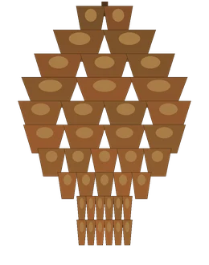
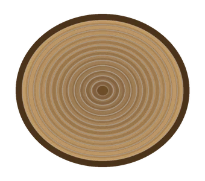
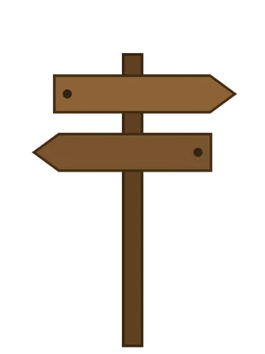
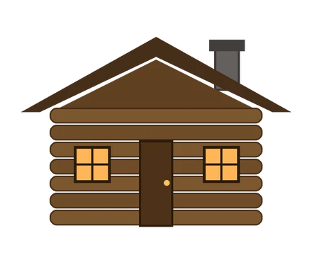

Selamat Datang di Rimba
“Dan di antara tanda-tanda kebesaran-Nya ialah Dia menciptakan pasangan-pasangan untukmu agar kamu cenderung dan merasa tenteram kepadanya, dan Dia menjadikan di antaramu rasa kasih dan sayang.”
QS. AR-RUM : 21
Di ketinggian rimba pinus yang sunyi, di antara kabut pagi dan batang-batang yang menjulang, dua hati memulai pendakian terindah mereka. Dengan penuh syukur, kami mengundang Bapak/Ibu/Saudara/i untuk hadir dan memberi doa restu pada hari bahagia kami.
Pengantin Putri & Putra
Beranda kabin, diapit dua batang pinus raksasa

Meyzsa Putri Ananda
Putri dari
Bapak H. Muhammad Ridwan
& Ibu Hj. Siti Aminah

Ahmad Fahrezzi Pratama
Putra dari
Bapak H. Bambang Sutrisno
& Ibu Hj. Ratna Dewi

Di beranda kabin kecil kami, tempat pendakian ini berawal.

Jalur Pendakian Kami
Empat pos, satu puncak — kisah kami menaiki jalur rimba

Berawal dari pertemuan sederhana di kampus — obrolan sore itu seperti langkah pertama menyusuri jalur setapak: ringan, teduh, dan terasa akan berjalan jauh.

Di hadapan keluarga tercinta, Fahrezzi menyampaikan niat sucinya — sehangat api unggun yang dijaga bersama dalam satu tenda. Meyzsa menerimanya dengan hati berbunga.

Ada tanjakan, ada kabut tebal — jarak dan kesibukan menguji langkah kami. Seperti kompas yang setia, kami selalu menemukan arah pulang: satu sama lain.
Sabtu, 12 Juni 2027 — bendera kecil kami berkibar di puncak pendakian ini: sebuah pernikahan. Kami mohon doa restu agar perjalanan setelah puncak diberkahi hingga selamanya.
Linimasa & teks kisah di atas adalah contoh untuk tampilan tema.

Menuju Hari Bahagia

Pos Tunggul · 1.667 mdpl — menanti Pos Puncak 2.027 mdpl
Sabtu, 12 Juni 2027 — Jakarta
Akad Nikah
Masjid Agung Al-Azhar
Jakarta Selatan
Resepsi
The Ritz-Carlton Jakarta, Pacific Place
Jakarta Selatan
Dresscode Tamu
Berkenan hadir dengan nuansa warna rimba berikut
Panduan contoh: busana formal atau semi-formal bernuansa rimba di atas akan menyatu indah dengan suasana acara. Terima kasih atas pengertiannya.
Denah & Info Lokasi
Alamat lengkap & patokan menuju venue (contoh)
Akad Nikah — Masjid Agung Al-Azhar
Jl. Sisingamangaraja No. 1, Kebayoran Baru, Jakarta Selatan.
Patokan: kompleks Al-Azhar di sisi jalan utama Sisingamangaraja, mudah dijangkau kendaraan pribadi maupun transportasi umum. Area parkir tersedia di sekitar kompleks; tamu disarankan tiba ±30 menit lebih awal.
Resepsi — The Ritz-Carlton Jakarta, Pacific Place
Jl. Jend. Sudirman Kav. 52–53, SCBD, Senayan, Jakarta Selatan.
Patokan: berada di kawasan SCBD, terhubung dengan Pacific Place Mall; masuk melalui lobi utama hotel. Area parkir tersedia di gedung mal; tamu disarankan tiba ±30 menit lebih awal.
Dinding Kabin & Papan Pos
Delapan potret bergantian: tergantung di dinding kabin & papan pos jalur — ketuk untuk memperbesar




Cuplikan dari Rimba
Sepotong kisah kami dalam bingkai bergerak
Video teaser — contoh (dirender dari foto tema ini dengan lagu pengiring; pada undangan asli dapat diganti video prewedding mempelai).

Siaran Langsung
Untuk keluarga & sahabat yang berhalangan hadir langsung
Resepsi Pernikahan
Sabtu, 12 Juni 2027 · mulai 11.00 WIB
The Ritz-Carlton Jakarta, Pacific Place
Tautan contoh (demo) — pada undangan asli, tombol ini mengarah ke siaran langsung mempelai dan aktif menjelang acara.
Abadikan momen bahagia Anda dan tandai dengan tagar resmi kami.
Galeri Tamu
Bagikan momen bahagia Anda selama acara — unggah foto Anda di sini dan tandai juga dengan tagar #MeyzsaFahrezzi.
Jadilah yang pertama membagikan momen — ketuk tombol unggah.
Contoh — foto tersimpan di perangkat ini saja (penyimpanan lokal peramban), tidak diunggah ke server.

Buku Log Pos Pendakian
Tulis nama & doa Anda di buku log pos — seperti pendaki yang singgah
Log Keberangkatan — Pos 1.928
Setiap pendaki yang lewat meninggalkan jejak. Tinggalkan jejak doa Anda untuk kedua mempelai di sini.
Fitur demo pada contoh undangan ini — catatan tersimpan hanya di perangkat Anda dan tidak terkirim ke server.
STEMPEL POS · PINUS RIMBA · 12 JUN 2027Presensi di Pos Singgah
Pindai kode QR ini atau isi buku tamu saat tiba di lokasi

Kode QR membuka halaman undangan ini — tunjukkan kepada penerima tamu saat check-in.
Fitur demo pada contoh undangan ini — data check-in tersimpan hanya di perangkat Anda.
POS SINGGAH · CHECK-INTanda Kasih
Doa restu Anda adalah hadiah terindah. Bagi yang berkenan memberi tanda kasih:
Nomor di atas adalah contoh untuk keperluan demo tampilan undangan.
Kediaman Mempelai Wanita
Jl. Melati Indah No. 12, Kebayoran Baru,
Jakarta Selatan 12120 (alamat contoh)

Turut Mengundang
Segenap keluarga besar kedua mempelai
Keluarga Mempelai Wanita
Keluarga Besar Ridwan — Jakarta
Keluarga Besar Aminah — Bogor
Beserta segenap kerabat & handai tolan
Keluarga Mempelai Pria
Keluarga Besar Sutrisno — Jakarta
Keluarga Besar Dewi — Tangerang
Beserta segenap kerabat & handai tolan
Susunan keluarga di atas adalah contoh untuk tampilan tema.


Merupakan suatu kehormatan dan kebahagiaan bagi kami beserta keluarga apabila Bapak/Ibu/Saudara/i berkenan hadir dan memberikan doa restu kepada kedua mempelai.
KAMI YANG BERBAHAGIA
…dan dari puncak rimba pinus ini, perjalanan berdua kami pun dimulai.
PUNCAK 2.027 MDPL · M&F · 12 JUN 2027Undangan digital contoh “Pinus Rimba” oleh UndangYa! — seluruh nama, tanggal, dan nomor adalah data contoh.
Musik latar: “Petals on the Stone Floor”.